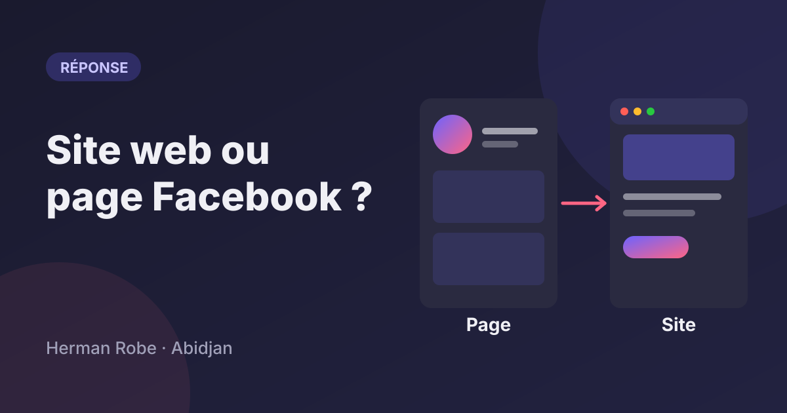
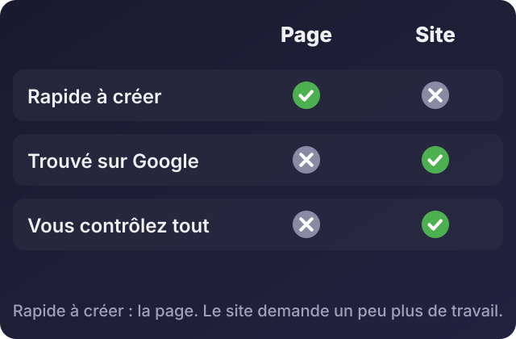
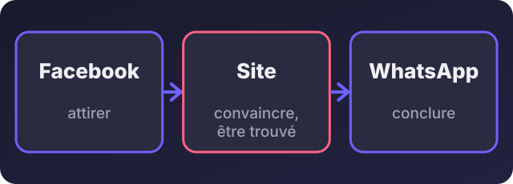

Site web ou page Facebook : lequel choisir pour son entreprise ?
Par Herman Robé · 5 novembre 2026 · 3 min de lecture

Écouter cet article · environ 3 min
« Mes clients sont sur Facebook, pourquoi payer un site ? » C'est une bonne question, et la réponse n'est pas toujours « faites un site ». Voici comment décider.
Ce que la page Facebook fait bien
Elle est gratuite et rapide à créer. Vous pouvez être en ligne le jour même.
Vos clients y sont déjà. Ils vous trouvent, vous écrivent, vous partagent.
Elle se met à jour depuis le téléphone, sans compétence technique.
Ses limites
Vous ne contrôlez rien. La plateforme peut changer ses règles, réduire la portée de vos publications ou suspendre une page.
Elle se trouve mal sur Google. Quelqu'un qui tape « réparation climatiseur Cocody » tombe rarement sur une page Facebook de petite entreprise.
L'information se disperse. Vos prix, vos horaires et votre adresse sont noyés dans le fil des publications.
Elle rassure moins qu'un site pour un client qui ne vous connaît pas encore, surtout une entreprise ou une administration.
Ce que le site apporte
Une adresse qui vous appartient, avec votre nom de domaine.
Une présence sur Google : une page par service, avec les mots que vos clients tapent.
Une information claire : ce que vous faites, vos tarifs ou vos conditions, comment vous joindre, tout au même endroit.
Des demandes qualifiées : un formulaire, un bouton WhatsApp, un devis à demander.
Pour résumer la comparaison :

Comparaison entre une page Facebook et un site web : rapidité, présence sur Google, contrôle
Comment choisir
Vous démarrez, avec peu de moyens : commencez par une page Facebook et un compte WhatsApp Business (catalogue, message d'accueil, réponses rapides, étiquettes pour suivre les commandes). Réservez dès maintenant le nom de domaine de votre entreprise, même sans site.
Vous recevez déjà des demandes par Facebook et WhatsApp, et vous passez du temps à répéter les mêmes réponses : un site simple, avec une page par service et un bouton WhatsApp, vous fera gagner ce temps.
Vous visez des entreprises, des administrations ou des clients qui comparent : le site n'est plus un luxe, c'est une preuve de sérieux.
Vous vendez en ligne régulièrement : boutique en ligne, avec commande par WhatsApp ou paiement mobile selon vos clients.

Facebook pour attirer, le site pour convaincre, WhatsApp pour conclure
Une règle simple
Si votre activité dépend d'une seule plateforme que vous ne contrôlez pas, vous êtes fragile. Gardez toujours une adresse qui est à vous : un nom de domaine, une liste de contacts clients, une sauvegarde de vos photos et de vos textes.